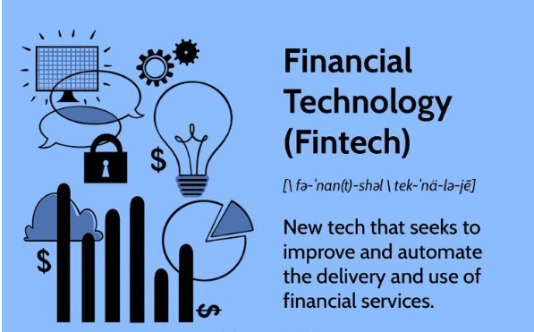

Leadership & Consulting
Senior technical leadership across enterprise financial systems and real-time data infrastructure, built on a foundation of eight years advising healthcare, supply-chain and financial-services enterprises through regulatory and technical transformation.
Supports the BCS Fellowship criterion: Consultancy.
Consulting-led engineering leadership
Solutions architect and technology leader with more than 17 years architecting, modernizing and governing enterprise-scale financial systems, currently as VP, Solutions Architect at Synchrony Financial, where I lead a 50+ person global team building the real-time caching and data platform I conceived in 2020 — 10B+ API data requests served monthly at ~20ms average, with $12–15M in annual cost avoidance. Full detail on that platform is under Invention and Innovation.
That leadership is built on a foundation of hands-on enterprise consulting: more than eight years in consulting roles with Cognizant (2009–2016) and Capgemini (2016–2018), advising large enterprises across healthcare, supply chain and financial services where middleware and integration platforms underpinned mission-critical operations.
Consulting engagements
Newest first.

Add photoimages/consulting-synchrony.jpg
Illustrative graphic — not engagement-specific evidenceSynchrony: cloud and platform modernization
Led modernization of enterprise integration platforms, migrating more than 300 middleware packages and web services off legacy Solaris onto converged-cloud and Pivotal Cloud Foundry platforms, and designed high-volume integration services processing approximately 150 million transactions per day. The engagement led to an invitation to join Synchrony as a full-time employee — the client trust that carried directly into the caching-platform work under Invention and Innovation.
Synchrony fact sheetNeeded: optional: appreciation certificate or reference from this engagement Add photoimages/consulting-ups.jpg
Add photoimages/consulting-ups.jpg
Illustrative diagram — not UPS-specific evidenceUPS: global logistics integration layer
Core middleware integration layer for UPS's commercial supply-chain systems: shared infrastructure connecting data across a global logistics network and major clients including Apple, Nike and Costco, alongside healthcare-related logistics requiring strong governance, traceability and reliability.
UPS company factsNeeded: optional: UPS-side reference or LinkedIn recommendation Add photoimages/consulting-healthcare.jpg
Add photoimages/consulting-healthcare.jpg
Illustrative diagram — not engagement-specific evidenceHealthcare: regulatory-critical integration
Clearinghouse and integration systems handling enrollment, claims processing, remittance and settlement, through two federally mandated transitions: the Health Insurance Portability and Accountability Act (HIPAA) 4010-to-5010 EDI migration[1], and the switch to the International Classification of Diseases, 10th Revision (ICD-10)[2]. Both were compliance deadlines set in law by the U.S. Department of Health and Human Services, where inaccurate mappings or missed deadlines could trigger claims rejection and regulatory non-compliance industry-wide. Core tools: IBM WebSphere Transformation Extender (WTX) and IBM MQ.
Outcome
Across these engagements, my role extended beyond delivery: combining specialist integration expertise, industry knowledge, architectural leadership and knowledge transfer to help organizations navigate regulatory change, modernization and high-volume integration. That consulting foundation is the throughline into the platform ownership under Invention and Innovation and the mentoring described under Inspiration and Recognition.
References
- U.S. HHS — enforcement discretion regarding compliance with HIPAA 5010 standards
https://www.hhs.gov/guidance/document/enforcement-discretion-regarding-compliance-just-released-hipaa-standards - CMS final rule setting the 1 October 2015 ICD-10 compliance date
https://www.cbhc.org/archive/cms-final-rule-sets-icd-10-compliance-date-at-oct-1-2015/page/46/ - UPS — company facts and global scale
https://www.ups.com/us/en/about/facts.page - Synchrony Financial — fact sheet
https://www.synchrony.com/s/fact-sheet.html